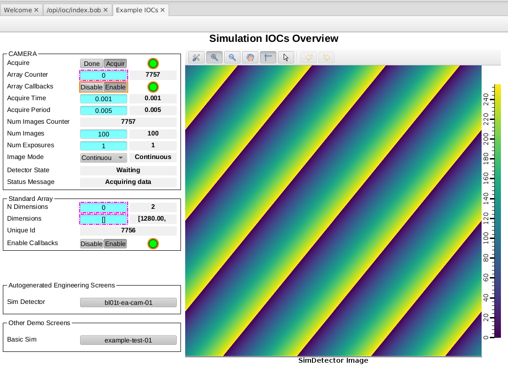

Developer Containers Part 2#
In this tutorial we will take a look at some of the extra features that came with the ioc-adsimdetector developer container we built in the previous tutorial. The compose folder in the ioc-adsimdetector repository contains a docker-compose file that can be used to launch a gateway and a phoebus container to view the PVs from the IOC. This works in the same way as the test compose profile that we used in the t01-services repository from earlier tutorials.
Channel Access#
If you want to inspect or change PV values for your developer container you can do so using the command line tools inside of the container.
If you still have your previous session open then you can use that. If you need to relaunch your developer container, then you can do so with the following commands:
cd ioc-adsimdetector
code .
# ctrl-shift-p and choose 'reopen in container'
# open a terminal in vscode
ibek dev instance /workspaces/t01-services/services/bl01t-ea-cam-01
cd /epics/ioc
make
./start.sh
Now you can open a new terminal in vscode and interact with the IOC using the EPICS CLI tools:
caget BL01T-EA-CAM-01:DET:Acquire
caput BL01T-EA-CAM-01:DET:Acquire 1
caput BL01T-EA-CAM-01:ARR:EnableCallbacks 1
# now see the (changing) value of the image array
caget -#100 BL01T-EA-CAM-01:ARR:ArrayData
caget -#100 BL01T-EA-CAM-01:ARR:ArrayData
...
This just shows that you have all the EPICS tools available to you inside the container.
Note that you have the ability to install any other tools you might need inside the container using sudo apt update; sudo apt install package-name, the container is based on ubuntu 24.04 so all packages available for that distro are available to you. podman users should drop the sudo from the start of the commands.
If you want to use a GUI tool or any other tools you have installed on your host machine we will need a couple of extra steps.
Phoebus and Gateway#
Generic IOCs can use PVI to auto generate engineering screens for your IOC instance in the form of phoebus bob files. ioc-adsimdetector uses this to make screens for the simdetector driver and for all of the AreaDetector plugins installed in the IOC instance.
To make use of these screens we can install phoebus on the host machine or run it in a separate dedicated container. In either case we need our PVs to be accessible from outside of the container. For this purpose we use a separate gateway container which runs in the same network as the IOC container and binds to the channel access ports on the host machine’s loopback adapter.
To launch both phoebus in a container and the ca-gateway container we use compose just like we did in the t01-services tutorial. The compose file is in the compose folder of the ioc-adsimdetector repository.
IMPORTANT: the commands we are about to run must be executed on the host, not in the developer container. We are launching further containers here and we do not want ‘containers in containers’ because there lies madness! To launch the gateway and phoebus containers, open a new terminal on the host and use the following commands:
cd /workspaces/ioc-adsimdetector/compose
. ./environment.sh
dc up -d
Phoebus will be launched and attempt to load the bob file called opi/ioc/index.bob. The opi folder is a place where the author of this generic IOC could place some screens. The subfolder ioc is not committed to git and is where the IOC instance will place its autogenerated engineering screens. The autogenerated screens always include and index.bob which is the entry point to all other autogenerated screens.
/workspaces in Phoebus Container#
Just like the developer container itself, the Phoebus container mounts the folder above ioc-adsimdetector into the container as /workspaces. This means you can access bob files from peer projects.
The autogenerated engineering screens currently show the image array as a list of integers. But we already had a nice screen for displaying an overview of the PVs, including an image widget for the image array. That screen was made for the same IOC instance we are currently running inside of the developer container.
To access the screen, chose File -> Open in phoebus and navigate to /workspaces/t01-services/opi/demo-simdet.bob file. This will open the screen in phoebus and allow you to view the sample image.
 Example overview screen for bl01t-ea-cam-01
Using Host Machine Tools#
If you have EPICS tools installed on the host machine then those can now also be used.
You will need to tell channel access that it should search against the loopback adapter to find PVs from your developer container. Do this with:
export EPICS_CA_ADDR_LIST=127.0.0.1
If you are running phoebus on the host machine it is configured via a settings file. Launching phoebus on your host with the following command will apply the correct settings and launch the index screen for the IOC instance:
phoebus.sh -settings compose/phoebus/config/settings.ini -resource /opi/ioc/index.bob